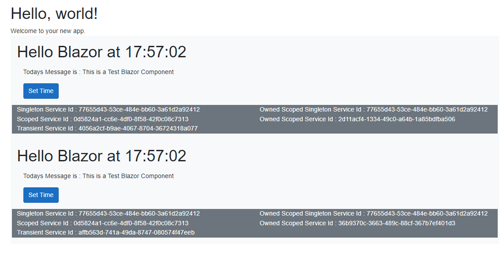

Table of Contents
Blazor Services
This post looks at Blazor the Dependency Injection Containers and examines the lifecycle of the services they provide.
Dependency Injection Containers
Blazor has three levels of service containers. These are:
Application Service Container. This is held by the running instance of DotNetCore. In the Blazor Server Context the WebApplication. This contains all the Singleton Services.
Blazor Hub Service Container. This is held by the Blazor Hub Session for the running SPA: one per user Hub session. This contains the normal Scoped and Transient Services.
Blazor Component/Class Container. This is held by the instance of OwningComponentBase or other class that implements a Service Container. This contains any specified Scoped or Transient Services.
Some points to note:
- The Service registration process in Startup/Program defines the configuration of services you can instantiate in DI service containers.
- Services instantiated in a lower level container can access services in a higher level container. A service in a Hub Session container can instantiate with a reference to a Singleton service instance in the application container. A service in a "Owning" container can reference a service in the Hub session container.
- You can create your own DI Container in any class you wish. Use the code from
OwningComponentBaseas a template.
To examine the behaviour of the Services we need a Blazor Application.
Building a Test Environment
Project
Add a Blazor Server template project.
Services
Add the following classes to a new Services folder:
namespace Blazr; public class TransientService : IDisposable { public readonly Guid Id = Guid.NewGuid(); public TransientService() { Debug.WriteLine($"New Instance {this.GetType().Name} - {Id.ToString()}"); } public void Dispose() => Debug.WriteLine($"Disposing {this.GetType().Name} - {Id.ToString()}"); }
namespace Blazr; public class SingletonService : IDisposable { public readonly Guid Id = Guid.NewGuid(); public SingletonService() { Debug.WriteLine($"New Instance {this.GetType().Name} - {Id.ToString()}"); } public void Dispose() => Debug.WriteLine($"Disposing {this.GetType().Name} - {Id.ToString()}"); }
namespace Blazr; public class ScopedService : IDisposable { public readonly Guid Id = Guid.NewGuid(); public readonly SingletonService SingletonService; public ScopedService(SingletonService singletonService) { SingletonService = singletonService; Debug.WriteLine($"New Instance {this.GetType().Name} - {Id.ToString()}"); } public void Dispose() => Debug.WriteLine($"Disposing {this.GetType().Name} - {Id.ToString()}"); }
Add these services to the the application services:
// Add services to the container.
builder.Services.AddRazorPages();
builder.Services.AddServerSideBlazor();
builder.Services.AddSingleton<WeatherForecastService>();
builder.Services.AddSingleton<SingletonService>();
builder.Services.AddScoped<ScopedService>();
builder.Services.AddTransient<TransientService>();
Component
Add /Components/ServicesComponent.razor
@inherits OwningComponentBase<ScopedService> @namespace Blazr @using Microsoft.AspNetCore.Components.Web; <div class="bg-light p-3"> <h1>Hello Blazor at @(time.ToLongTimeString())</h1> <div class="m-3"> Todays Message is : @Message </div> <div class="m-3"> <button class="btn btn-primary" @onclick="GetTime">Set Time</button> </div> <div class="Container-fluid"> <div class="row bg-secondary text-white"> <div class="col-6 text-start"> Singleton Service Id : @this.singletonService!.Id.ToString()<br /> Scoped Service Id : @this.scopedService!.Id.ToString()<br /> Transient Service Id : @this.transientService!.Id.ToString()<br /> </div> <div class="col-6 text-start"> Owned Scoped Singleton Service Id : @this.Service.SingletonService.Id.ToString()<br /> Owned Scoped Service Id : @this.Service.Id.ToString()<br /> </div> </div> </div> </div> @code { [Parameter] public string Message { get; set; } = string.Empty; [Inject] private SingletonService? singletonService { get; set; } [Inject] private ScopedService? scopedService { get; set; } [Inject] private TransientService? transientService { get; set; } private DateTime time = DateTime.Now; protected override void OnInitialized() => time = DateTime.Now; private void GetTime() => time = DateTime.Now; }
Finally update index.razor: add the ServicesComponent
@page "/" <PageTitle>Index</PageTitle> <h1>Hello, world!</h1> Welcome to your new app. <ServicesComponent Message="This is a Test Blazor Component" />
Testing
Run the project and examine the Debug Console.
The Logs
The first section is the pre-render of the page by the server - this is the Index page.
The only surviving service is the Singleton 7765.
New Instance SingletonService - 77655d43-53ce-484e-bb60-3a61d2a92412
New Instance ScopedService - 81895945-1e7d-400f-a15b-fb853bd62de4
New Instance TransientService - f76d6dad-8493-4401-ba75-5ba5d153a686
New Instance TransientService - beba3fd1-fa4d-47e1-8291-d2a33166d6d3
New Instance ScopedService - 8b965aa9-22b2-4061-88a4-ac3893d95a31
New Instance ScopedService - b436f1b0-ef28-4f35-8780-8dca3bc6365b
Disposing TransientService - beba3fd1-fa4d-47e1-8291-d2a33166d6d3
Disposing TransientService - f76d6dad-8493-4401-ba75-5ba5d153a686
Disposing ScopedService - 81895945-1e7d-400f-a15b-fb853bd62de4
Disposing ScopedService - 8b965aa9-22b2-4061-88a4-ac3893d95a31
Disposing ScopedService - b436f1b0-ef28-4f35-8780-8dca3bc6365b
The next section is the actual first live render of Index.

- The singleton 7765 instance is the same throughout.
- The Scoped 0d58 instance is the normal Hub Session instance. It's used by both instances of the component.
- There are two transient instances b258 and 5b7d.
- There are two scoped instances 3a1b and d57a created by the "Owning" components.
New Instance ScopedService - 0d5824a1-cc6e-4df0-8f58-42f0c08c7313
New Instance TransientService - b2581dd9-abf4-4cdb-86e9-14cdf707550f
New Instance TransientService - 5b7d992c-0abc-4157-945f-eb8ab57e23a8
New Instance ScopedService - 3a1b5c67-92ec-42d7-b7f5-3454da4ba4ec
New Instance ScopedService - d57a6c8b-7464-48f3-b52c-45fe4f6bd53a
When we navigate to Counter:
- The two scoped instances 3a1b and d57a created by the "Owning" components are disposed.
Disposing ScopedService - 3a1b5c67-92ec-42d7-b7f5-3454da4ba4ec
Disposing ScopedService - d57a6c8b-7464-48f3-b52c-45fe4f6bd53a
When we navigate back to Index

- The singleton 7765 instance is the same.
- The Scoped 0d58 instance is the same normal Hub Session instance.
- There are two new transient instances 4056 and affb.
- There are two new scoped instances 2d11 and 36b9 created by the "Owning" components.
New Instance TransientService - 4056a2cf-b9ae-4067-8704-36724318a077
New Instance TransientService - affb563d-741a-49da-8747-080574f47eeb
New Instance ScopedService - 2d11acf4-1334-49c0-a64b-1a85bdfba506
New Instance ScopedService - 36b9370c-3663-489c-88cf-367b7ef401d3
Pretty much as you would expect. But, what happened to those two Transient instances in the first render - b258 and 5b7d? Why haven't they been disposed? The same will be true of 4056 and affb on the second visit to Index.
The answer lies in how the Service Container deals with object instances that implement IDisposable.
Normal Transient service instances are created in the ciontainer, and the reference to the instance handed to the requester. The container keeps no reference to the instance. When the Instance goes out of scope with it's owner - normally the component being destroyed, the garbage collector also destroys the service instance: it has no references.
IDisposable Transient services on the other hand need disposing. Someone has to call Dispose on the instance, the garbage collector certainly doesn't! So the DI container holds a reference to all IDisposable instances it creates. When the requester now gets destroyed, the IDisposable Transient instance is still referenced by the DI container and thus not destroyed by the garbage collector. So when do they get disposed.
To demonstrate I visited Index several times to build up a pot of Transient instances. I then hit F5 to restart the SPA session. At this point you will see this: all the Transient instances being disposed.
Disposing TransientService - 55db7e96-54fa-4ada-8a32-940fa3f7c506
Disposing TransientService - 38e99d73-95c5-4818-869f-bf530c1e3a14
Disposing TransientService - 4b92d54c-0c2b-4ebb-a610-6c4fdf44bea4
Disposing TransientService - 9b552c10-2d74-4eae-9245-8126ed38e1a2
Disposing TransientService - 61e6ab76-17ce-4b06-98ed-e5b4afbfffd3
Disposing TransientService - e04b744f-b7fd-4de8-bcb6-a90d2d494607
Disposing TransientService - 17635829-3200-4a5b-8adf-df61e5cc58a0
Disposing TransientService - 9c572895-2aca-4b84-ba2f-484cdf34c0d7
Disposing TransientService - d9c4d35b-da28-4b95-883c-2e40ef9a605d
Disposing TransientService - 92e2a5da-ea43-436e-8955-1958896e5555
Disposing TransientService - cabccee4-a5ac-4826-83cc-8125f3e84a1c
Disposing TransientService - 56b33353-ac58-4d5f-906f-e5a062c22352
Disposing TransientService - affb563d-741a-49da-8747-080574f47eeb
Disposing TransientService - 4056a2cf-b9ae-4067-8704-36724318a077
Disposing TransientService - 5b7d992c-0abc-4157-945f-eb8ab57e23a8
Disposing TransientService - b2581dd9-abf4-4cdb-86e9-14cdf707550f
Restarting the SPA session, or just killing it by navigating away from the SPA, closes the Hub session and with it the Hub Session DI container. The clean up process when the hub session closes disposes of the DI container, which causes the DI container to call Dispose on all service instances in its "Needs Disposing" list. This includes all the orphaned Transient instances.
You may not think this is too desperate, but it all depends on what those Transient Services do.
Imagine one that does a database lookup and creates a database context instance to do it. And that instance is "disposed" through IDisposable. You could soon have many "open" database sessions, eating up a lot of memory and database resources.
Solutions to the Transient IDisposable Issue
- Use
usingto restrict further the scope of unmanaged resources to methods or sections of methods. - Only use such services in
OwningComponentBaseDI containers. There's a little more work involved, but they are then disposed when the component is destroyed.
Here's a slightly different implementation of ServicesComponent. The TransientService instance is now running in the component DI container.
@code {
[Parameter] public string Message { get; set; } = string.Empty;
[Inject] private SingletonService? singletonService { get; set; }
[Inject] private ScopedService? scopedService { get; set; }
private TransientService? transientService { get; set; }
private DateTime time = DateTime.Now;
protected override void OnInitialized()
{
time = DateTime.Now;
transientService = ScopedServices.GetRequiredService<TransientService>();
}
private void GetTime()
=> time = DateTime.Now;
}
Wrap Up
Hopefully you're a little more enlightened about Blazor and AspNetCore Dependency Injection and Services.